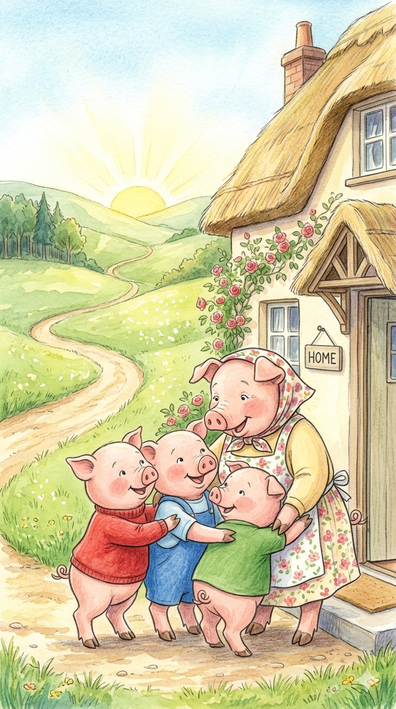
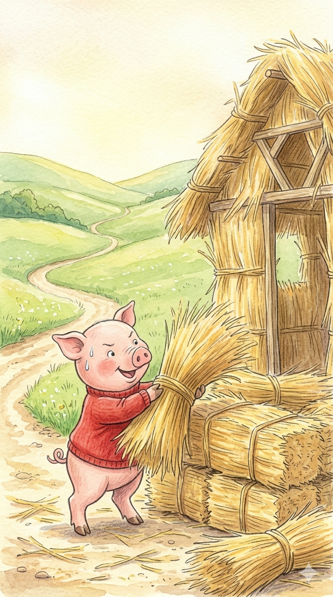
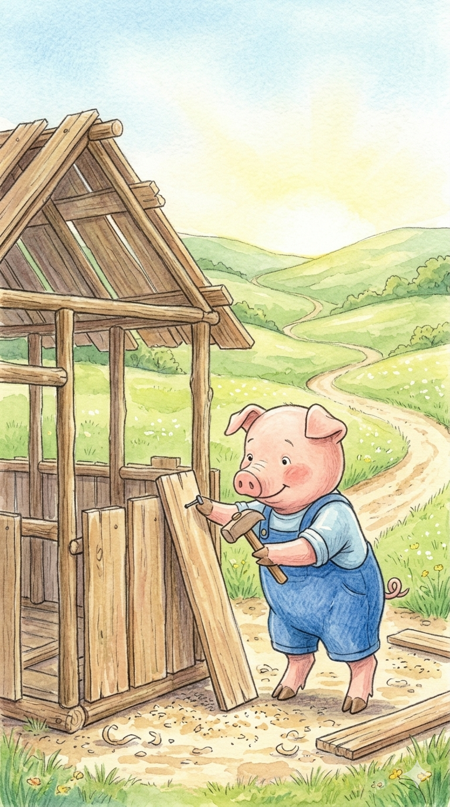
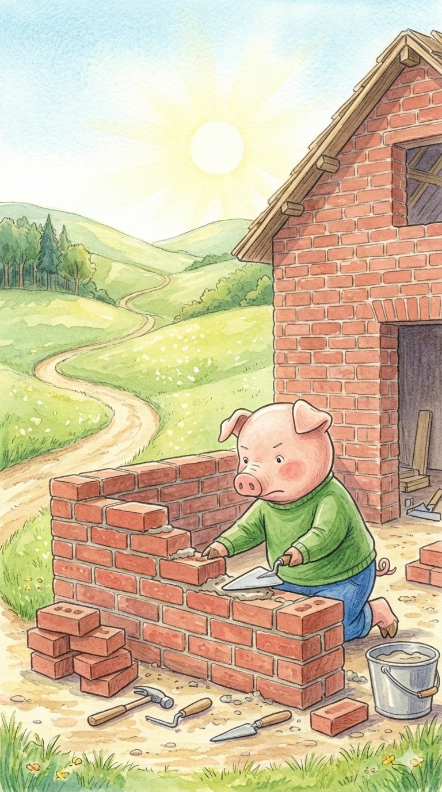
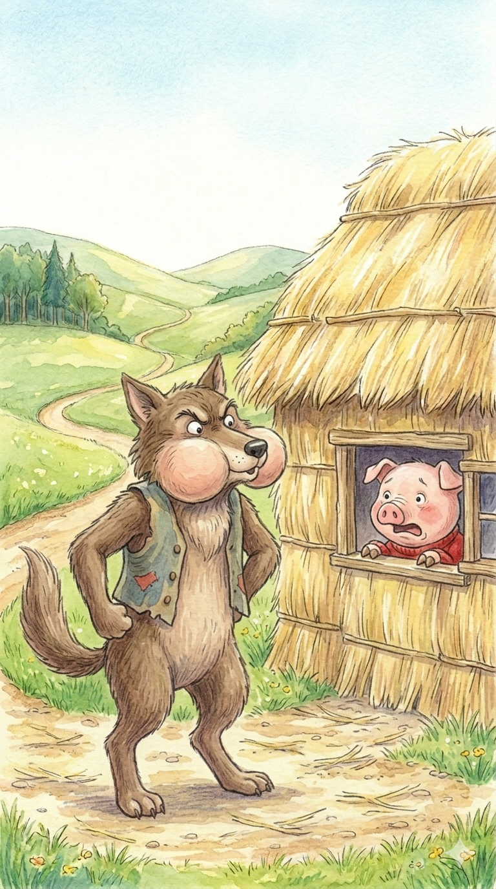
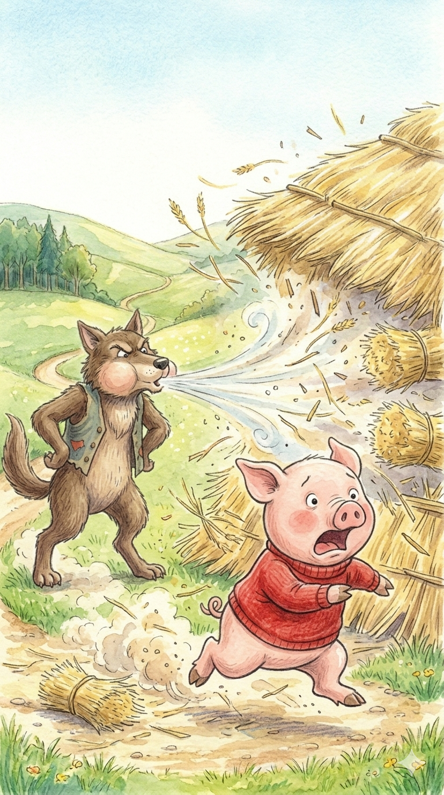
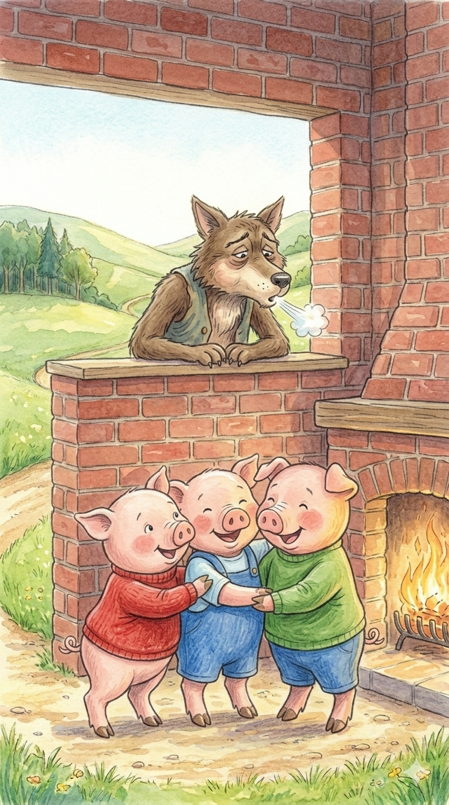
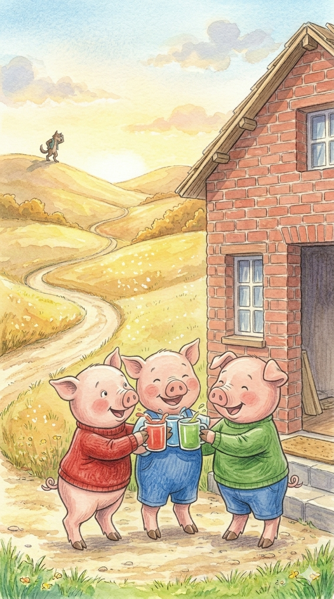

¡Había una vez!

¡Hola, amiguitos! Bienvenidos a la historia de los tres cerditos. Estos tres hermanos se despiden de su mamá para construir sus propias casitas.
La Casita de Paja

El primer cerdito, el más perezoso, decidió construir su casita muy rápido. "¡Pronto podré jugar!", pensó entre fardos amarillos.
Tablas de Madera

El segundo cerdito pensó que la madera sería más fuerte. ¡Toc, toc, toc! clavaba tablas con energía y mucha alegría.
Ladrillo a Ladrillo

El mayor era más sensato: "¡La mía será de ladrillos!". Trabajó duro colocando cada bloque rojo con mucho cuidado.
¡Un Visitante!
¡Y entonces apareció el lobo feroz! Pero no tengáis miedo, es un poco despistado. Se paró frente a la casita de paja.
¡Soplaré y soplaré!

"¡Cerdito, déjame entrar o tu casa derribaré!", exclamó el lobo. El cerdito temblaba dentro de su casita.
¡Por los aires!

¡La casita de paja salió volando! El cerdito corrió muy rápido hacia la casita de madera de su hermano.
¡Todos a Salvo!

Los tres se refugiaron en la casa de ladrillo. El lobo sopló y sopló, ¡pero no pudo mover ni un solo ladrillo!
¡Final Feliz!

Aprendieron que el trabajo duro tiene su recompensa. Vivieron felices, y el lobo se fue a buscar comida a otra parte.